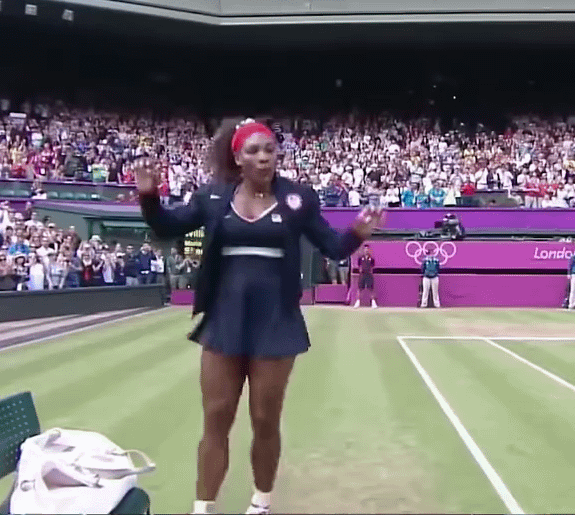

Les grandes polémiques
- Londres 2012 : Critiquée par la presse pour avoir dansé le Crip Walk à Wimbledon après son titre olympique.
- Roland-Garros 2018 : Sa combinaison médicale noire (catsuit) est jugée « irrespectueuse » par la fédération.
- US Open 2018 : Un arbitre lui retire un jeu entier en finale pour avoir contesté ses avertissements.
Le racisme dans un sport élitiste
Issue d'un quartier populaire afro-américain, Serena a bousculé un milieu historiquement blanc et conservateur. En 2001, huée et visée par des insultes racistes en finale d'Indian Wells, elle boycotte le tournoi pendant 14 ans. Elle a aussi subi des attaques répétées sur son physique musclé et des contrôles antidopage plus fréquents que ses rivales.
La misogynie dans le sport
En tant que femme noire au sommet, elle a affronté un double standard constant : punie plus sévèrement que les hommes pour ses émotions sur le court, et privée de son statut de tête de série après son congé maternité en 2018 — une injustice qui a poussé la WTA à réformer ses règles. Avec Venus, elle a aussi obtenu l'égalité des primes en Grand Chelem.